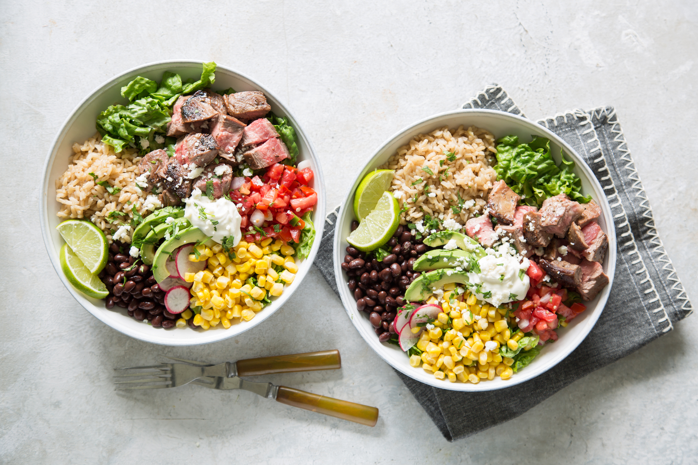

Burrito Bowl

Description
At college, I eat the same dinner every day: a steak burrito bowl.
There is something satisfying about the mixture of warm and cold elements,
soft and hard textures, and the variety of flavors together in a bowl.
This bowl will consist of steak, a nice seasoning blend, and multiple different
types of vegetables.
Ingredients
- 3/4 lb sirloin steak
- 1 Tbsp Southwest seasoning blend
- 1 Tbsp olive oil
- 1 (10-oz) pkg chopped romaine lettuce
- 1 (8.8-oz) pouch microwavable brown rice
- 1 (15-oz) can black beans, rinsed and drained
- 1 (15-oz) can corn, rinsed and drained
- 1/2 (16-oz) container pico de gallo
- 1 avocado, thinly sliced
- 1/2 cup sliced radish
- 1/2 cup sour cream
- 2 Tbsp chopped fresh cilantro
- 1 lime, cut into wedges
Steps
- Sprinle steak with seasoning blend. Cook steak in hot
oil in a large nonstick skilled over medium-high heat,
5 minutes per side or to desired doneness. Let stand
5 minutes; cut into 1-inch pieces.
-
Meanwhile, heat rice according to package directions.
-
Divide lettuce among 2 wide-mouth bowls or plates. Top
lettuce with desired amount of steak, rice, beans, corn,
pico de gallo, avocados, and radishes. Dollop with sour
cream, and sprinkle with cilantro. Serve with lime wedges.
Nutritional Facts
N/A